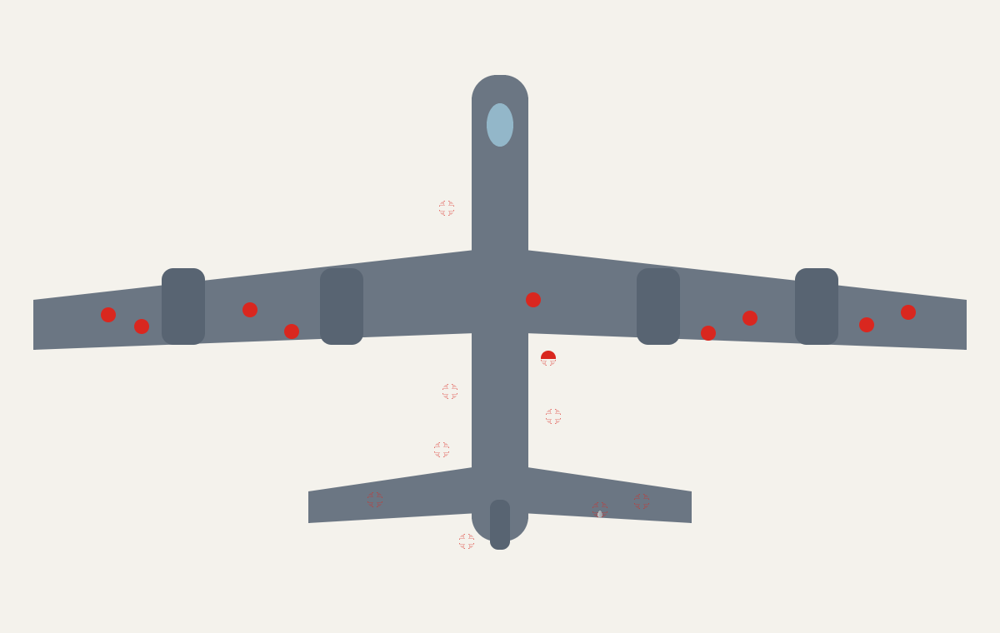

קבלת החלטות מבוססת נתונים
מנתחים את הנתונים שלכם
עובדים עם AI
מייצרים תובנות
יצאתם עם שאלה עסקית. היום נביא לה נתונים.
מה יש לנו
שאלה עסקית מנוסחת.
מה נעשה היום
קובץ אמיתי, ניתוח עם AI, ותובנות שאפשר לעמוד מאחוריהן.
עקרונות לעבודה עם נתונים
כללים בעבודת נתונים ברשות
שבעה עקרונות לעבודה עם נתונים ברשות
מתחילים בשאלה, לא בקובץ
קובץ בלי שאלה הוא ים של מספרים. השאלה העסקית קובעת אילו עמודות חשובות ומה מתעלמים ממנו.
מספר לבד לא אומר כלום
נתון מקבל משמעות רק מול משהו: שנה קודמת, עיר דומה, ממוצע, יעד.
זהירות עם מספרים קטנים
כשהקבוצה קטנה, שינוי קטן נראה דרמטי.
הכלל הוא מינימום 30.
יודעים מאיפה הנתון הגיע
מאיזה מערכת, מתי, ומה ההגדרה. אותה מילה יכולה להיספר אחרת בכל מחלקה. שם של רחוב או שכונה נכתב אחרת
בודקים איכות לפני שמנתחים
שורות כפולות, תאים ריקים, תאריכים משובשים ושמות רחובות בכמה כתיבים — כל אלה משנים את התוצאה.
הנתון מראה מה — האנשים מסבירים למה
מספרים מצביעים על תופעה, לא על הסיבה שלה.
את ה"למה" משלימים בשיחה, בתצפית ובידע מהשטח.
פרטיות התושבים קודמת לכל
לפני שקובץ יוצא מהמערכת — מורידים שמות, ת״ז, טלפונים וכתובות מדויקות. מעלים לכלי AI רק קובץ מותמם.
סבב: השאלות העסקיות שלכם
דקה לכל אחד. בלי דיון — רק לשמוע איפה כל אחד עומד.
סורקים וכותבים את השאלה העסקית
שלוש שורות — וממשיכים
1.1 השאלה העסקית
מה אני רוצה לדעת?
1.2 מקור הנתונים
איזה קובץ או מערכת הבאתי?
1.3 מצב הקובץ
מוכן לעבודה · דורש התממה (הסרת פרטים אישיים) · עוד אין
כל חלק בצבע משלו — עקבו אחרי הצבע
כשמופיע בצד השקף ריבוע צבעוני — עוברים לחלק באותו צבע בדף.
עובדים עם הנתונים ו AI
לוקחים קובץ Excel אמיתי — ומנתחים אותו עם AI, שלב אחרי שלב.
כותבים בעברית —
ומקבלים קוד שעובד.
גרף, דשבורד, אתר ניתוח — בלי לדעת לתכנת.
משהו לא עובד? כותבים לו בדיוק את זה.
לא צריך לדעת למה זה נשבר. צריך לתאר מה רואים — ולהתעקש.
מקובץ Excel — לתובנות
שלבים 1–3 קורים לפני שה‑AI רואה את הקובץ. זה החלק שהכי קל לדלג עליו — ואסור.
מוצאים את הקובץ
ייצוא ממערכת
מוקד, גבייה, רישוי, CRM — רוב המערכות מייצאות ל‑Excel.
קובץ שכבר אצלכם
דוח חודשי, טבלת מעקב, רשימה שמתעדכנת ידנית.
מאגר פתוח
data.gov.il, הלמ״ס, אתר השקיפות של העירייה.
פותחים ובודקים את הקובץ לפני הכל..
| תאריך פנייה | רחוב | נושא | סטטוס | ימי טיפול |
| 03/01/2026 | הנרקיס | תאורה | טופל | 4 |
| 03/01/2026 | שדרות החשמונאים | פסולת | פתוח | |
| 04/01/2026 | הזית | בטיחות בדרכים | טופל | 11 |
| 04/01/2026 | שד' החשמונאים | תאורה | טופל | 2 |
| … עוד שורות | ||||
כרטיס היכרות עם הקובץ
מה אתם חושבים שהנתונים יגידו?
כותבים השערה אחת או יותר — לפני הניתוח. כך תדעו מה אושש, מה הפתיע — ומה צריך בדיקה נוספת.
דף העזר · חלק 3 · עד שלוש השערות (3.1–3.3)
התממה = מוציאים מהקובץ כל פרט שיכול לזהות תושב. נכון ל‑Gemini, ל‑NotebookLM ולכל מערכת אחרת.
לפני שהקובץ עולה לאנשהו — מתמימים אותו
מוחקים
שם, ת״ז, טלפון, מייל, מספר בית.
מחליפים בקוד
צריך לזהות חזרות? ״תושב 001״ במקום השם.
מכלילים
גיל ← טווח גילים. כתובת ← שכונה או אזור סטטיסטי.
טוענים את הקובץ ומפעילים Deep Research
הסתמך אך ורק על הקובץ — אל תחפש מידע נוסף באינטרנט.
השאלה שלי: [השאלה העסקית].
זהה מגמות, חריגים והשוואות, והפק מסקנות ותובנות. לכל תובנה ציין על אילו עמודות היא מבוססת.
קוראים את תוכנית המחקר — ורק אז מאשרים
קוראים את התוכנית
האם היא עונה על השאלה שלכם? האם מופיע בה חיפוש באינטרנט?
עורכים אם צריך
"ערוך תוכנית" — מוסיפים, מורידים, ומזכירים: רק מהקובץ.
מאשרים ומחכים
כמה דקות של עבודה. בינתיים — חוזרים להשערות שכתבתם (3.1–3.3).
קוראים את דוח ה‑Deep Research — בעין ביקורתית
לפני שיוצרים משהו מהדוח — קוראים אותו ומחפשים ארבעה דברים:
מגמות
מה עולה, יורד או חוזר על עצמו?
מסקנות
מה הדוח מסיק — ועל אילו עמודות זה מבוסס?
טעויות
מספר שלא מסתדר? עמודה שהתבלבלה? מקור מהאינטרנט?
מה חדש
מה לא ידעתם — ומה סותר את ההשערות שלכם?
ממשיכים לשאול: ניתוח ותובנה
ניתוח
״מה הקטגוריות הגדולות, ומה חלקן מהסך?״
״איך זה השתנה לאורך זמן? פלח לפי שכונה.״
תובנה
״מה שלוש התובנות הרלוונטיות לשאלה שלי?״
״מה עוד צריך לבדוק לפני שמחליטים?״
תקלות שקורות — ואיך תופסים אותן
error_outlineקרא רק חלק מהקובץ
שואלים: כמה שורות קראת?
error_outlineבלבל בין עמודות
במיוחד כותרות בעברית או מקוצרות
error_outlineטעה בתאריכים
יום/חודש הפוכים, שנה חסרה
error_outlineספר תא ריק כאפס
ממוצע שיורד בלי סיבה
error_outlineהמציא מספר
מספר שלא מופיע בקובץ — מבקשים להראות את השורות
error_outlineחיפש באינטרנט
למרות ההוראה — בודקים מקורות בדוח
קדימה ואחורה: מה ה‑AI אומר, ומה אתם יודעים
הניתוח של ה‑AI
מגמות, חריגים, השוואות — מהר ובהיקף.
הידע המקצועי שלכם
מה קורה בשטח, מה השתנה, מה הגיוני.
חדר המחקר
מהדוח — לדשבורד אינטראקטיבי שאפשר לסנן, להצליב ולבדוק.
נכנסים לחדר המחקר: מתארים דשבורד במילים — ומקבלים אותו עובד
הדוח מוכן? לוחצים על ״יצירה״ בסוף הדוח ← ״דף אינטרנט״ ← בשורה שנפתחת מדביקים את הפרומפט מהוואטסאפ.
זמין גם בחשבון חינמי, עם מגבלת שימוש.
מעתיקים את הפרומפט — ומקבלים דשבורד
כל הרשומות בדשבורד? בודקים לפני הכול
מספר הרשומות בדשבורד מול מספר השורות בקובץ (סעיף 2.2).
מעלים שוב את קובץ האקסל באותה שיחה וכותבים:
רק עכשיו נכנסים לחדר המחקר ומתחילים לשאול.
מצליבים שני נתונים — ומחפשים מה חדש
זה הולך יחד ≠ זה גורם. בודקים לפני שמסיקים.
חדר המחקר — ושלוש תובנות
בונים
חדר מחקר: ״יצירה״ ← ״דף אינטרנט״ — ומשפרים בשלושה סבבים לפחות.
מנסחים
שלוש תובנות: ממצא · משמעות · מה עושים.
בודקים
תובנה אחת לפחות — מול הקובץ ומול הידע שלכם.
הפקת תובנות
מה שה‑AI מצא — הופך למשהו שאפשר להחליט לפיו.
למה אסור לשתף מידע אישי עם ה‑AI?
לא נטען? פתחו את הסרטון בפייסבוק ↗ממצא אומר מה קרה. תובנה אומרת מה לעשות.
ממצא
70% מהפניות על תאורה מגיעות משלוש שכונות.
משמעות
הבעיה מרוכזת — לא פזורה בכל העיר.
אז מה עושים
מתחילים את תוכנית החידוש בשלוש השכונות האלה.
מתרחקים כדי לראות מגמה. מתקרבים כדי להבין אותה.
Zoom out
כל העיר, כל השנים. מה המגמה? איפה יש קפיצה?
״הראה את המגמה החודשית בשלוש השנים האחרונות.״
Zoom in
שכונה אחת, חודש אחד, נושא אחד. מה עומד מאחורי הקפיצה?
״פרט את הפניות של מרץ בשכונה X לפי נושא.״
שלושה נושאים — 70% מהפניות
מיעוט קטן של סיבות אחראי לרוב הבעיה. מוצאים אותו — ושם מתחילים.
״סדר את הקטגוריות מהגדולה לקטנה, והראה אחוז מצטבר.״
מתאם אינו סיבתיות
קפיצה למסקנה ✕
"מספר התלונות עולה בקיץ — אז החום גורם לתלונות."
בדיקה נוספת ✓
אולי בקיץ יש יותר פעילות עסקית — גורם שלישי מסביר את שניהם.
איפה כדאי לשריין את המטוס?
במלחמת העולם השנייה בדקו את המטוסים שחזרו מהקרב, וסימנו איפה ספגו יריות — כמעט כולן בכנפיים.
הקפיצה למסקנה: "יש הכי הרבה חורים בכנפיים — בואו נשריין את הכנפיים."
אברהם וולד: לשריין דווקא איפה שאין חורים — מי שנפגע שם (המנוע) פשוט לא חזר.

בוחרים את הגרף לפי השאלה
עמודות
להשוות בין קטגוריות — איזה אגף, איזו שכונה.
קו
מגמה לאורך זמן — עלייה, ירידה, עונתיות.
מספר בודד
כשיש נתון אחד חזק — הציגו אותו גדול, לבד.
אותו נתון — שני סיפורים
ציר חתוך — "זינוק דרמטי" ✕
הציר מתחיל מ‑95 — הבדל של 3% נראה ענק.
ציר מ‑0 — התמונה האמיתית ✓
הציר מ‑0 — ההבדל האמיתי קטן.
כשמראים לכם גרף — הסתכלו קודם על הצירים, לא על הצורה.
NotebookLM — מחברת המחקר שלכם
מעלים את הדוח, הקובץ והמסמכים — ושואלים. התשובות מבוססות רק על המקורות שלכם.
notebooklm.google.com ↗מעלים מקורות ← שואלים ← מייצרים
מעלים מקורות
• Excel / Sheets ו‑CSV
• PDF ו‑Word
• אתרים וסרטוני YouTube
• הקלטות ותמונות
• Deep Research — מוצא מקורות ברשת
שואלים ובודקים
• תשובות רק מהמקורות — עם הפניה לכל טענה
• מגדירים לצ׳אט מטרה ותפקיד
• מסמנים רק חלק מהמקורות כדי למקד
מייצרים בסטודיו
מה גילינו
כל צוות: תובנה אחת מהנתונים, ורגע אחד שבו כמעט נפלתם במלכודת.
התובנה
מה הנתונים אמרו על השאלה שלכם.
המלכודת
איפה כמעט הטעו אתכם הנתונים או ה‑AI.
מה השתנה
האם ההנחה מיום 1 אוששה — או הופתעתם.
אוספים חומר גלם לסיפור
עד המפגש הבא — בחרו את התובנה החזקה שלכם, ואספו שלושה חומרים שיהפכו אותה לסיפור.
מספר מפתח
הנתון האחד שמסכם את הבעיה.
ציטוט תושב
משפט אמיתי שנותן פנים לנתון.
תמונה או מסך
ויזואל אחד שממחיש את המצב.
מה לקחנו מהיום
עקרונות
שבעה כללים לעבודה ברשות
ניתוח עם AI
שבעה שלבים · Deep Research
בדיקה ביקורתית
ה‑AI מול הידע המקצועי
תובנות וחדר מחקר
פארטו · Zoom · הצלבת נתונים
מחר — הופכים את התובנה לסיפור שמניע לפעולה. תודה על יום שני מצוין.